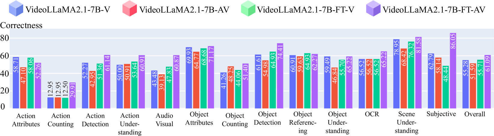

We present QIVD to assess situated AI, where AI systems must interpret and respond to real-time visual and audio inputs or talk talk to a user in the real world and understand what's happening right now
Abstract
AI models have made significant strides in recent years in their ability to describe and answer questions about realworld images. They have also made progress in the ability to converse with users in real-time using audio input. This raises the question: have we reached the point where AI models, connected to a camera and microphone, can converse with users in real-time about scenes and events that are unfolding live in front of the camera? This has been a long-standing goal in AI and is a prerequisite for real-world AI assistants and humanoid robots to interact with humans in everyday situations. In this work, we introduce a new dataset and benchmark, the Qualcomm Interactive Video Dataset (IVD), which allows us to assess the extent to which existing models can support these abilities, and to what degree these capabilities can be instilled through fine-tuning. The dataset is based on a simple question-answering setup, where users ask questions that the system has to answer, in real-time, based on the camera and audio input. We show that existing models fall behind human performance on this task, and we identify the main sources for the performance gap. However, we also show that for many of the required perceptual skills, fine-tuning on this form of data can significantly reduce this gap.
QIVD Benchmark
We present QIVD, a novel benchmark created to assess the non-expert multimodal situated understanding capability of foundation models. Our benchmark for each instance includes a video (with audio) of a user asking a question about the video, the transcribed question, the ground truth answer, and a ground-truth timestamp at which the question should be answered.All the videos in the benchamrk have been crowdsourced and then annotated by non-expert annotators. Following this the videos go through a rigororus quality check process and semantic categorization process.
We use a situated question-answering setup, where we have a streaming video, and the model must decide if the question has been asked and if there is enough information to answer the question. If so the models must answer the question. Particularly, answering the questions do not require any domain expertise.
Experiment Results
QIVD does not require any domainspecific knowledge or complex reasoning skills. Yet we show that the task is still highly challenging for LMMs. Particularly, models fall far behind human performance on sitiated understanding.All of the models have been tested in:
1. streaming setup: models must decide if the question has been asked and if there is enough information to answer the question. If so the models must answer the question. More details in the paper.
2. offline setup: models must answer the question based on the entire video and the question.
We experimented with both open-source and closed-source multimodal-models, finetuned models on the benchmark, and allowed models to process audio. We evaluate the performance of all the models in a zero-shot setting and conduct prompt engineering if models do not provide any prompts for such tasks.
Leaderboard
Streaming Setup
| Model | Corr. ↑ | BERT ↑ | METEOR ↑ | BLEU ↑ | ROUGE-L ↑ |
|---|---|---|---|---|---|
| Chat-UniVi | 39.69 | 89.94 | 37.47 | 6.08 | 28.45 |
| InstructBLIP | 37.17 | 82.19 | 4.35 | 0.02 | 10.00 |
| LLaMA-VID | 43.48 | 90.51 | 37.19 | 5.84 | 29.80 |
| LLaVA-NeXT | 24.97 | 85.29 | 22.85 | 1.38 | 11.64 |
| Video-ChatGPT | 35.38 | 90.53 | 38.13 | 7.58 | 31.08 |
| VideoChat | 8.00 | 85.05 | 23.48 | 1.08 | 12.22 |
| VideoChat2 | 46.07 | 91.13 | 45.49 | 11.35 | 41.38 |
| Video-LLaVA | 23.52 | 87.77 | 27.15 | 1.98 | 19.31 |
| VideoLLaMA | 33.52 | 89.50 | 39.06 | 7.62 | 30.84 |
| VideoLLaMA2-7B | 44.31 | 91.18 | 47.20 | 13.93 | 40.63 |
| VideoLLaMA2-72B | 47.69 | 91.42 | 46.58 | 14.03 | 41.70 |
| VideoLLaMA3-7B | 52.31 | 90.92 | 45.20 | 11.21 | 40.54 |
| Qwen2.5-VL-7B | 53.55 | 87.17 | 34.95 | 3.88 | 26.52 |
Overall results of different models on the QIVD leaderboard. The best-performing model in each category is in-bold, and the second best is underlined. Corr. represents the correctness score calculated by the LLM judge.
Offline Setup
| Model | Corr. ↑ | BERT ↑ | METEOR ↑ | BLEU ↑ | ROUGE-L ↑ |
|---|---|---|---|---|---|
| Chat-UniVi | 45.10 | 90.50 | 40.02 | 7.24 | 31.22 |
| InstructBLIP | 41.14 | 82.03 | 4.54 | 0.07 | 10.72 |
| LLaMA-VID | 48.48 | 90.78 | 37.55 | 5.42 | 29.82 |
| LLaVA-NeXT | 28.90 | 85.78 | 24.50 | 1.67 | 13.22 |
| Video-ChatGPT | 40.76 | 91.01 | 40.59 | 9.07 | 33.58 |
| VideoChat | 8.31 | 85.20 | 24.39 | 1.03 | 12.54 |
| VideoChat2 | 53.07 | 91.52 | 47.93 | 12.43 | 43.87 |
| Video-LLaVA | 18.62 | 83.38 | 2.90 | 0.00 | 15.66 |
| VideoLLaMA | 39.21 | 90.45 | 43.88 | 9.86 | 34.93 |
| VideoLLaMA2-7B | 52.69 | 91.71 | 51.08 | 16.41 | 43.84 |
| VideoLLaMA2-72B | 53.41 | 92.29 | 51.13 | 16.12 | 45.76 |
| VideoLLaMA3-7B | 59.62 | 91.63 | 48.56 | 12.72 | 43.84 |
| Qwen2.5-VL-7B | 60.00 | 87.58 | 37.37 | 4.66 | 29.44 |
| GPT-4o | 66.38 | 89.36 | 51.18 | 15.72 | 42.55 |
| Human (subset) | 89.00 | 93.01 | 53.21 | 17.40 | 49.76 |
Overall results of different models on the QIVD leaderboard. The best-performing model in each category is in-bold, and the second best is underlined. Corr. represents the correctness score calculated by the LLM judge.
Error Analysis
Analysis of model errors reveals that vision-language models struggle most with temporal understanding, fine-grained visual details, and spatial relationships within scenes. The performance gap between the best AI models (66.38% for GPT-4o) and humans (89.00%) highlights significant room for improvement in situated understanding. Common failure modes include hallucinating non-existent objects, focusing on irrelevant visual details, and failing to track objects across video frames. Models consistently perform worse in streaming setups compared to offline evaluation, indicating challenges in real-time decision-making. These findings suggest that while vision-language models have made impressive progress, significant challenges remain in achieving human-like performance in real-world interactions. Qualitative Results
We showcase some qualitative results from various models on the QIVD benchmark. The examples illustrate common error types including object hallucination, misinterpreting spatial relationships, ignoring temporal context, and producing inconsistent answers in complex environments. These qualitative samples complement the quantitative metrics by providing insight into specific model limitations in real-world scenarios.Citation
@misc{pourreza2025visionlanguagemodelsanswerface,
title={Can Vision-Language Models Answer Face to Face Questions in the Real-World?},
author={Reza Pourreza and Rishit Dagli and Apratim Bhattacharyya and Sunny Panchal and Guillaume Berger and Roland Memisevic},
year={2025},
eprint={2503.19356},
archivePrefix={arXiv},
primaryClass={cs.CV},
url={https://arxiv.org/abs/2503.19356},
}Easter Egg